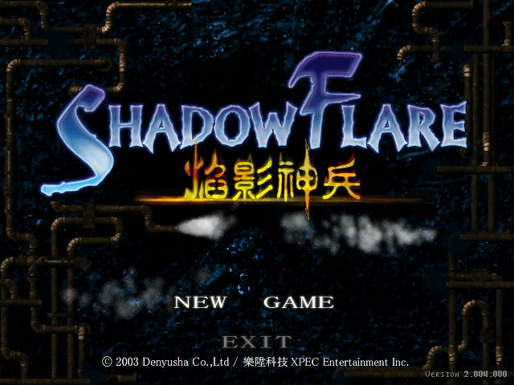
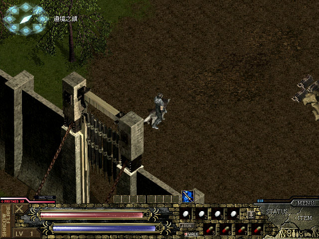

名稱：焰影神兵／神兵 (ShadowFlare，中文版)
簡介：日本Denyusha 2001出品的角色扮演遊戲，以3D斜角畫面呈現，採單人即時方式戰鬥。
2002年到2003年再推出資料片第二章到第四章，台灣由樂陞繁中化並代理發行，大陸
由空間互動簡中化並代理發行 [待補]。


保護：繁中版第一章赤色大陸，無保護
繁中版第二章巨龍邪窟，安裝序號：ZXSR-R617-G261-5M2C
繁中版第三章主教奇謀，安裝序號：TO8T-2MAS-ZECJ-5SD7
繁中版第四章幻獸魔塔，安裝序號：XHQI-6ZOH-XFX3-GWBV
繁中合輯版，安裝序號：X0VK-4I6R-NI3J-QVFO
檔案：install_cht.rar = 繁中版全四分章安裝檔